Enterprise Intelligence Platform
Complete User Tutorial & Quick Start Guide
Platform URL:
https://8th-july-sprint.d11ri08de55gmb.amplifyapp.com
Access Credentials
No login required
The platform is currently open access.
Simply visit the URL to get started.
Document Version: 1.0
Date: August 2026
Table of Contents
- 1. Platform Overview
- 2. Getting Started
- 3. Markets Section
- 3.1 Stock Analysis
- 3.2 Valuation (DCF)
- 3.3 Expert Analysis
- 3.4 Company Profiles
- 3.5 Compare Tool
- 3.6 Economics Data
- 4. Intelligence Section
- 4.1 Deep Intelligence Reports
- 4.2 Global Search
- 4.3 Saved Reports
- 4.4 Timeline View
- 5. Institutional Section
- 5.1 Institutional Holdings (13F)
- 5.2 Government Trading
- 5.3 Crypto Intelligence
- 6. Tools & Utilities
- 6.1 Entity Registry
- 6.2 Relationship Graph
- 6.3 Tracking & Alerts
- 7. Quick Reference Guide
1. Platform Overview
The Enterprise Intelligence Platform is a comprehensive financial research and analytics system that combines market data, intelligence reporting, institutional tracking, and government trading monitoring into a single unified interface.
Main Dashboard Overview
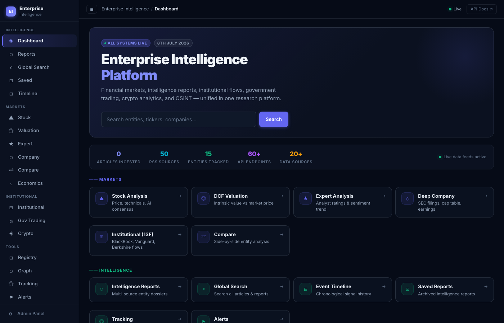
Platform Statistics
- 50+ Articles - Ingested from multiple sources
- 15+ RSS Sources - Live data feeds active
- 60+ Entities - Tracked and monitored
- 20+ API Endpoints - For programmatic access
Data Sources
The platform aggregates data from multiple authoritative sources:
- SEC - Securities filings, 10-K, 10-Q, 13F
- FEC - Federal Election Commission data
- FARA - Foreign Agents Registration Act
- USASpending - Government contracts
- LDA - Lobbying Disclosure Act (both sides)
- OFAC - Sanctions data
- CourtListener - Legal cases
- LinkedIn & PitchBook - Via Apify integrations
- Google News - Current events coverage
- CoinGecko - Cryptocurrency data
2. Getting Started
Quick Start Steps
- Open your web browser (Chrome, Firefox, Safari, or Edge recommended)
- Navigate to: https://8th-july-sprint.d11ri08de55gmb.amplifyapp.com
- The dashboard will load automatically - no login required
- Use the navigation menu on the left side to access different sections
Navigation Structure
The platform is organized into these main sections accessible from the left sidebar:
| Section |
Description |
| Dashboard |
Main entry point with system status overview |
| Reports |
Generate deep intelligence dossiers on entities |
| Global Search |
Search across all articles and reports |
| Saved |
Access your archived intelligence reports |
| Timeline |
View chronological signal history |
| Markets |
Stock, Valuation, Expert Analysis, Company, Compare, Economics |
| Institutional |
13F holdings, Government Trading, Crypto |
| Tools |
Registry, Graph, Tracking, Alerts, Skills |
3. Markets Section
The Markets section provides comprehensive financial analysis tools for stocks, valuations, and economic data.
3.1 Stock Analysis
What It Does
Analyze any publicly traded stock with fundamentals, technicals, AI consensus, and analyst ratings.
Stock Analysis Interface
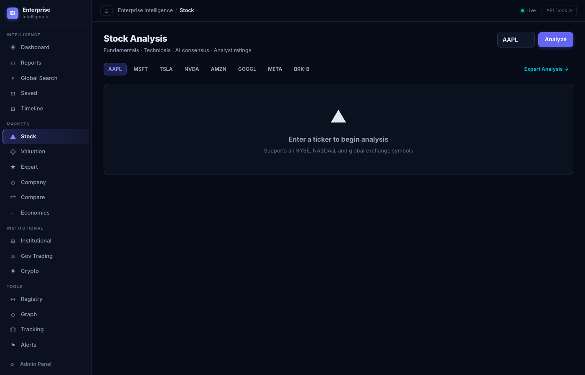
How to Use Stock Analysis
- Click "Stock" in the Markets section of the sidebar
- Enter a ticker symbol in the search box (e.g., AAPL, MSFT, TSLA)
- Or click one of the quick-access buttons: AAPL, MSFT, TSLA, NVDA, AMZN, GOOGL, META, BRK-B
- View the analysis including price data, technical indicators, and AI-powered insights
Supported Exchanges: NYSE, NASDAQ, and global exchange symbols
3.2 Valuation (DCF Analysis)
What It Does
Calculate intrinsic value using Discounted Cash Flow (DCF) analysis with SEC filing data. Compare fair value estimates against current market prices.
DCF Valuation Tool
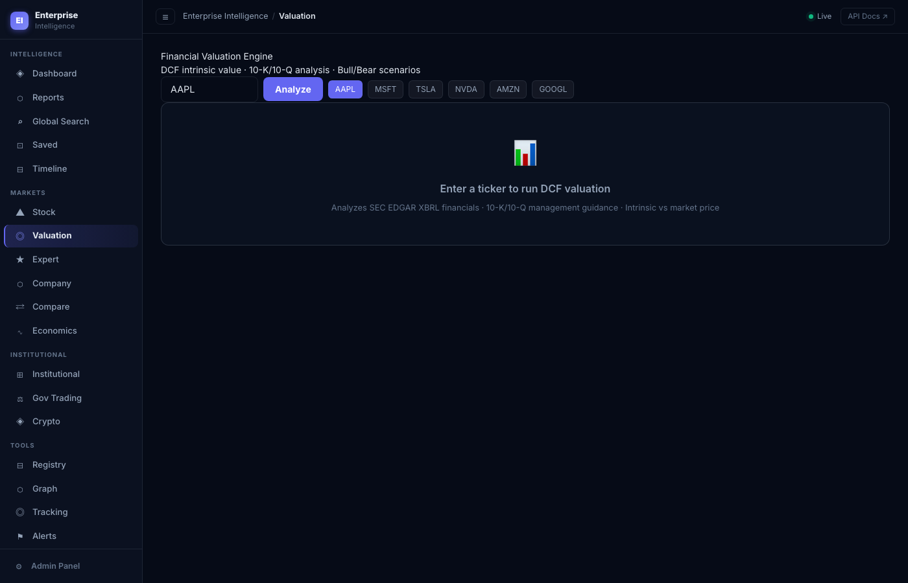
How to Use Valuation Tool
- Click "Valuation" in the Markets section
- Enter a stock ticker symbol
- The system automatically pulls SEC EDGAR XBRL financials
- View DCF intrinsic value, bull/bear scenarios, and price comparison
Data Sources: SEC 10-K/10-Q filings, XBRL financial data, management guidance
Use this tool to identify potentially undervalued or overvalued stocks by comparing calculated intrinsic value to market price.
3.3 Expert Analysis
What It Does
View aggregated analyst ratings and sentiment trends from Wall Street experts.
How to Use Expert Analysis
- Click "Expert Analysis" in the Markets section
- Enter a ticker symbol
- Review analyst recommendations (Buy/Hold/Sell)
- See price targets and sentiment trends over time
3.4 Company Profiles
What It Does
Deep dive into any public company with SEC filings, cap table data, earnings history, and insider trading activity.
Company Profile Interface
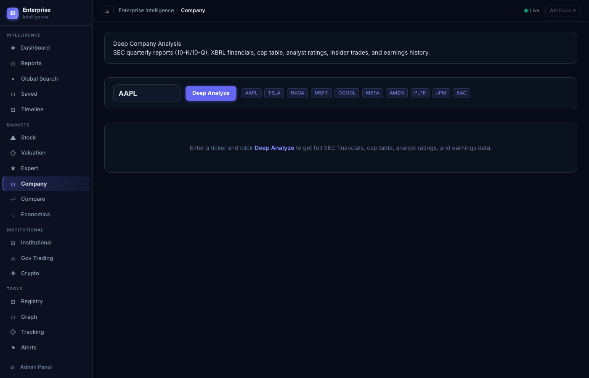
How to Use Company Profiles
- Click "Company" in the Markets section
- Enter a stock ticker symbol
- Click "Deep Analyze"
- Browse through SEC filings, financial data, cap table, and earnings history
Available Information:
- SEC quarterly reports (10-K/10-Q)
- XBRL financials
- Cap table and ownership structure
- Earnings history
- Analyst ratings
- Insider trades
3.5 Compare Tool
What It Does
Side-by-side comparison of multiple entities for competitive analysis.
How to Use Compare
- Click "Compare" in the Markets section
- Enter two or more ticker symbols
- View comparative metrics side by side
3.6 Economics Data
What It Does
Access macroeconomic data including GDP, CPI, interest rates, and FRED data.
How to Use Economics
- Click "Economics" in the Markets section
- Browse available economic indicators
- View charts and historical data trends
4. Intelligence Section
The Intelligence section is the core of the platform, providing deep research capabilities and comprehensive entity dossiers.
4.1 Deep Intelligence Reports
What It Does
Generate comprehensive 50-100+ page dossiers on any entity by aggregating data from 12+ sources including SEC, FEC, FARA, USASpending, court records, and more.
Intelligence Reports Generator
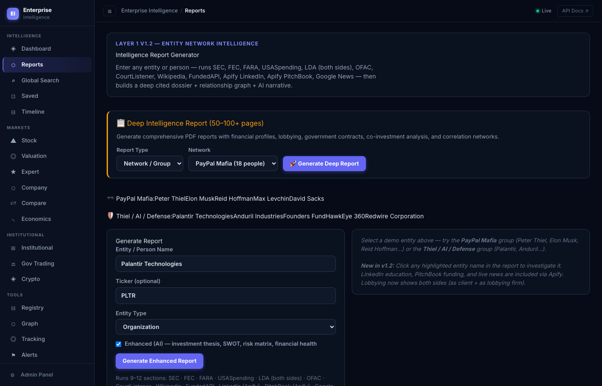
How to Generate a Report
- Click "Reports" in the navigation (or go to /intelligence)
- Choose a search method:
- Pre-built Networks: PayPal Mafia, Thiel/AI/Defense networks
- Entity Search: Enter a person or company name
- With Ticker: Add optional stock ticker for enhanced data
- Select entity type: Organization, Individual, Fund, or Government Agency
- Click generate and wait 30-90 seconds for processing
- Review the comprehensive report with clickable entity references
Report Includes:
- Investment thesis
- SWOT analysis
- Risk matrices
- Financial assessment
- LinkedIn education profiles
- Funding histories (PitchBook)
- Current news coverage
- Lobbying data (client and firm perspectives)
- Government contracts
- Court cases
Click on any entity name within a report to drill down and generate a new report on that entity.
4.2 Global Search
What It Does
Search across the entire intelligence database for entities, relationships, and evidence-linked records.
Global Search Interface
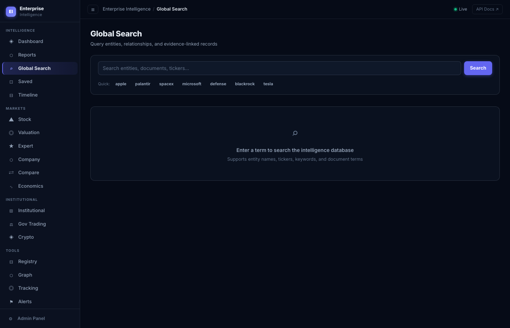
How to Use Global Search
- Click "Global Search" in the navigation
- Enter search terms: entity names, tickers, keywords, or document terms
- Or use quick search buttons: Apple, Palantir, SpaceX, Microsoft, Defense, BlackRock, Tesla
- Browse results organized by Entities, Relationships, and Evidence records
4.3 Saved Reports
What It Does
Access your previously generated and archived intelligence reports.
How to Use Saved Reports
- Click "Saved" in the navigation
- Browse your archived reports
- Click any report to view it again
4.4 Timeline View
What It Does
View chronological signal history showing events and updates over time.
How to Use Timeline
- Click "Timeline" in the navigation
- Scroll through events in chronological order
- Click on any event for details
5. Institutional Section
Track major institutional investors, government officials' trades, and cryptocurrency markets.
5.1 Institutional Holdings (13F)
What It Does
Research major institutional investors' portfolios using SEC 13F filings. Track positions of hedge funds, mutual funds, and investment managers.
Institutional Holdings Interface
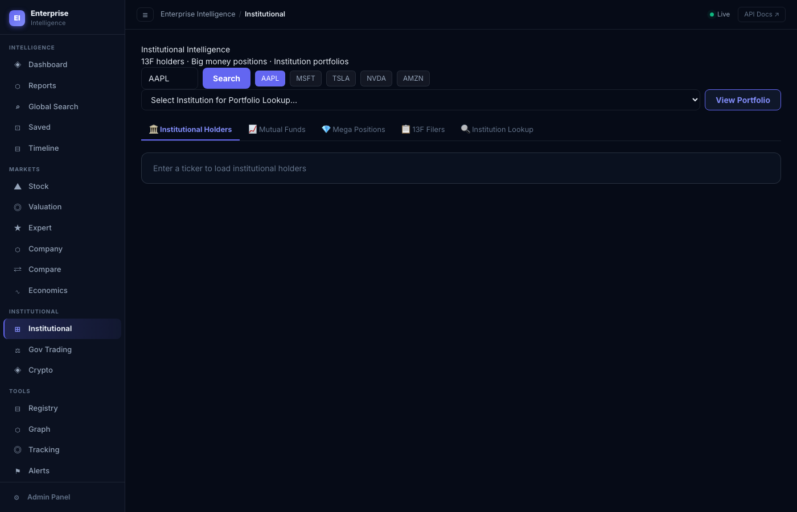
How to Use Institutional Holdings
- Click "Institutional" in the sidebar
- Enter a ticker symbol to see who holds that stock
- Or select an institution from the dropdown:
- Berkshire Hathaway
- BlackRock
- Vanguard
- State Street
- Fidelity
- T. Rowe Price
- JP Morgan
- Goldman Sachs
- Morgan Stanley
- Cathie Wood / ARK
- Pershing Square
- Browse through tabs: Institutional Holders, Mutual Funds, Mega Positions, 13F Filers, Institution Lookup
5.2 Government Trading
What It Does
Monitor congressional trading activity under the STOCK Act, corporate insider trades (SEC Form 4), and track individual politicians' financial dealings.
Government Trading Monitor
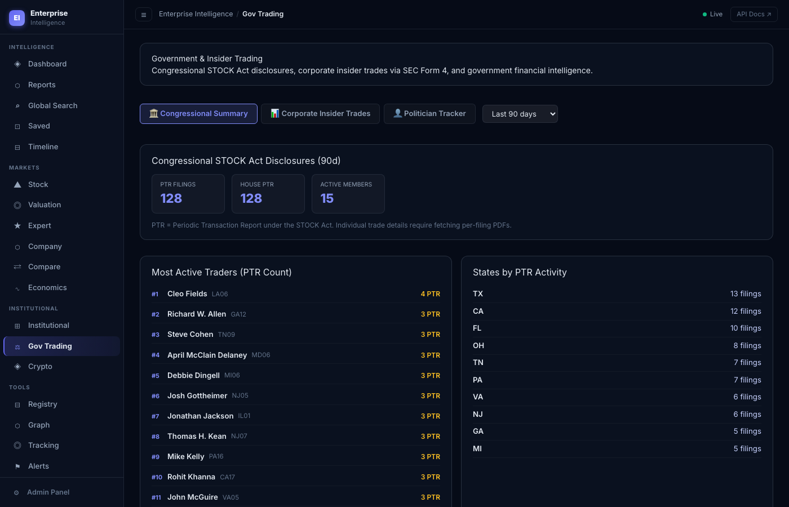
How to Use Government Trading
- Click "Gov Trading" in the sidebar
- Browse three main sections:
- Congressional Summary: STOCK Act disclosures
- Corporate Insider Trades: SEC Form 4 filings
- Politician Tracker: Individual politician monitoring
- Use time filters: Last 30/60/90 days, or Last 6 months
- Click on any trade for details
Use this feature to spot potential market-moving trades by government officials or corporate insiders before they become widely known.
5.3 Crypto Intelligence
What It Does
Monitor cryptocurrency markets with live CoinGecko data, wallet tracking, and whale alerts.
Crypto Intelligence Dashboard
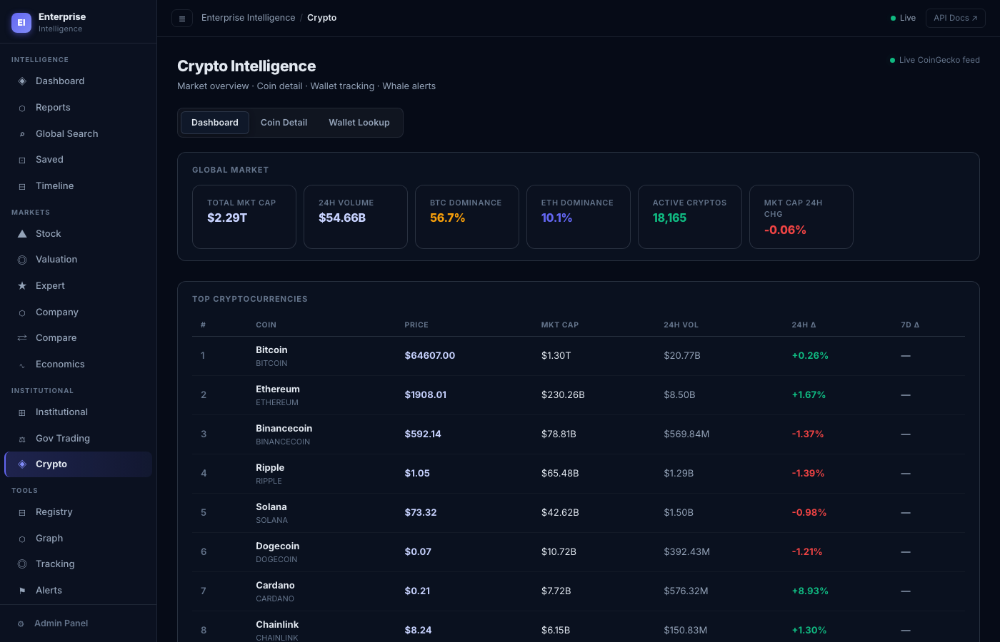
How to Use Crypto Intelligence
- Click "Crypto" in the sidebar
- Browse three main tabs:
- Dashboard: Market overview
- Coin Detail: Individual cryptocurrency analysis
- Wallet Lookup: Track specific blockchain addresses
- Monitor whale alerts for large transactions
6. Tools & Utilities
Advanced tools for entity management, relationship mapping, and automated monitoring.
6.1 Entity Registry
What It Does
OSINT enrichment and private intelligence repository for managing entity data.
How to Use Registry
- Click "Registry" in the Tools section
- Search for or add entities
- View enriched data from multiple sources
6.2 Relationship Graph
What It Does
Interactive network visualization showing relationships between entities. Features expand-on-click, zoom/pan, and export capabilities.
Relationship Graph Visualization
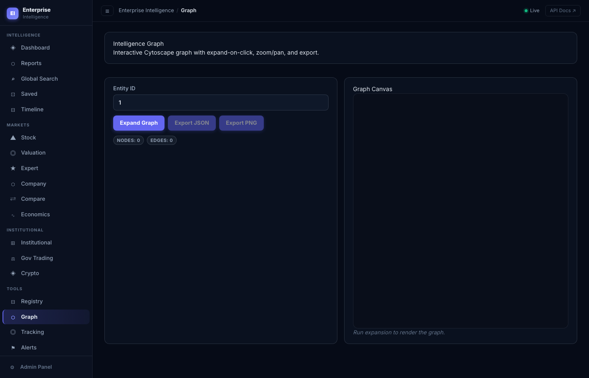
How to Use the Graph
- Click "Graph" in the Tools section
- Enter an entity ID in the input field
- Click "Expand Graph"
- Interact with the visualization:
- Click nodes: Expand to show related connections
- Zoom: Scroll to zoom in/out
- Pan: Click and drag to move around
- Monitor node and edge counts in real-time
- Export as JSON or PNG when ready
6.3 Tracking & Alerts
What It Does
Entity monitoring system (v2.0) that tracks changes in contracts, lobbying, court cases, and more. Supports automated daily digests with email and SMS alerts.
Tracking & Alerts Dashboard
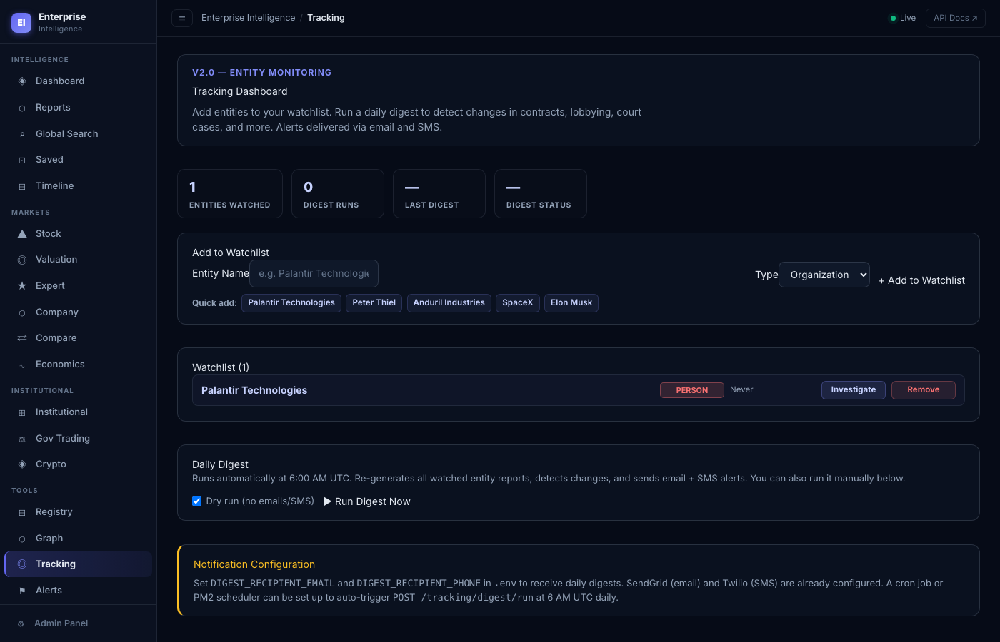
How to Set Up Tracking
- Click "Tracking" in the Tools section
- Add entities to your watchlist:
- Enter entity name manually, or
- Use quick-add suggestions: Palantir Technologies, Peter Thiel, Anduril Industries, SpaceX, Elon Musk
- Select entity type: Organization or Person
- View your watchlist dashboard showing entities monitored and digest history
Automated Alerts
The system runs automatically at 6:00 AM UTC daily, re-generating reports for all watched entities and sending notifications for any changes detected.
Alert Channels:
- Email (via SendGrid)
- SMS (via Twilio)
Use the "Dry run" option to test the digest without sending actual emails or SMS messages.
7. Quick Reference Guide
Navigation Shortcuts
| Feature |
URL Path |
Purpose |
| Dashboard |
/ |
Main overview |
| Reports |
/intelligence |
Generate dossiers |
| Global Search |
/search |
Search everything |
| Stock Analysis |
/stock |
Analyze stocks |
| Valuation |
/valuation |
DCF analysis |
| Company |
/company |
Company profiles |
| Institutional |
/institutional |
13F holdings |
| Gov Trading |
/gov-trading |
Political trades |
| Crypto |
/crypto |
Crypto markets |
| Graph |
/graph |
Relationship mapping |
| Tracking |
/tracking |
Entity monitoring |
| Alerts |
/tracking/alerts |
Alert management |
Common Quick Actions
AAPL
MSFT
TSLA
NVDA
AMZN
GOOGL
META
BRK-B
Pre-Built Network Reports
- PayPal Mafia
- Thiel Network
- AI/Defense Networks
Major Institutions Tracked
- Berkshire Hathaway
- BlackRock
- Vanguard
- State Street
- Fidelity
- T. Rowe Price
- JP Morgan
- Goldman Sachs
- Morgan Stanley
- Cathie Wood / ARK
- Pershing Square
Need Help?
The platform includes API documentation for programmatic access. Look for the "API Docs" link in the navigation for detailed endpoint information.
Enterprise Intelligence Platform
Tutorial Document v1.0 | August 2026
Platform URL: https://8th-july-sprint.d11ri08de55gmb.amplifyapp.com